Results¶
The figures and numbers below combine immutable archived outputs with three versioned corrected Phase 6 executions. They split cleanly into:
- Completed synthetic suite (fig1–fig5, table1–table4): bundled archived runs that validate the framework's correctness and scaling.
- Completed real-data fits (fig6–fig9): BayesBreak segmentations on four public datasets — well-log NMR geology, Coriell array-CGH, S&P 500 volatility regimes, and CpG-atlas methylation.
- Corrected executions: latent-group stress testing, raw-matrix array-CGH agreement, and family-correct methylation posterior prediction. Each has a new result ID, parent link, sidecar, and artifact hashes.
Synthetic suite¶
Single-sequence Gaussian recovery¶
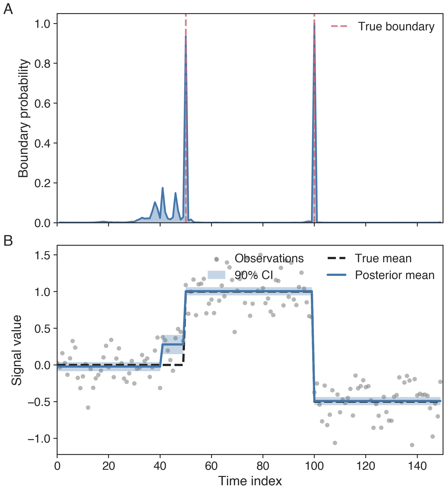
Top: marginal posterior probability that each interior index is a
boundary, with dashed verticals marking the truth. Bottom: observed
data, true latent mean, exported joint MAP segmentation, and 90%
segment-level posterior intervals. Joint-MAP boundaries align with the
high-mass marginal modes by construction
(thm:dp-correctness).
Likelihood-family portability¶
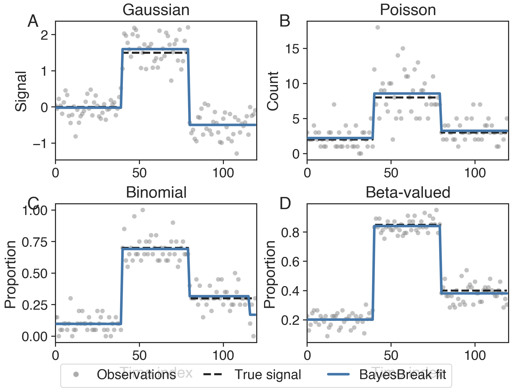
Four panels exercising the conjugate closed-form blocks (Gaussian,
Poisson, Binomial) plus the one-dimensional Gauss–Legendre quadrature
block for Beta-response data. The DP layer is identical across panels;
only the per-block routine changes (prop:gaussian-block /
prop:poisson-block / prop:binomial-block / prop:beta-block).
Boundary-posterior calibration¶
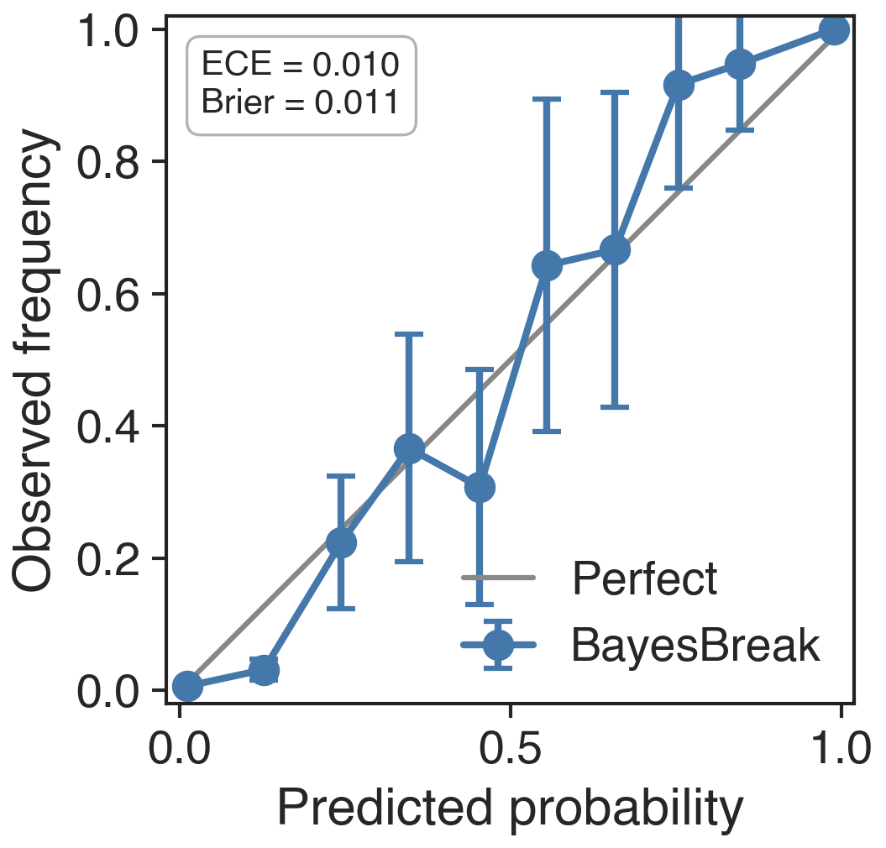
Empirical fraction of recovered boundaries vs predicted posterior probability, binned across repeated simulations under a tolerance window of \(\tau=2\) indices. The diagonal is the perfectly-calibrated reference. Combined with the boundary-event identity \(\sum_i P(b_i\!=\!1\mid y, k) = k-1\), this is the manuscript's main calibration evidence for the boundary marginals.
Latent-template grouping¶
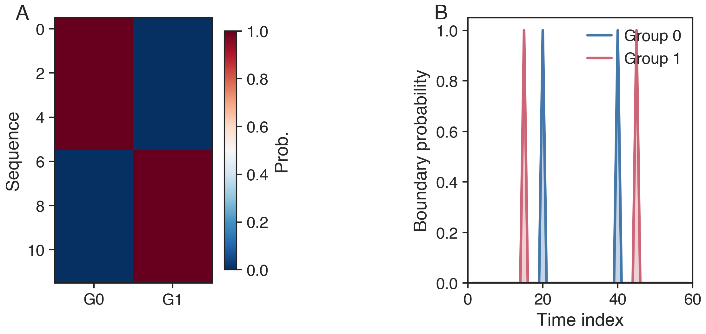
Two-template mixture recovery via the latent-template EM
(thm:em-monotone). Sequences from two ground-truth templates are
correctly clustered modulo the label-permutation indeterminacy
(prop:latent-identifiability + ex:label-switch-counterexample); the
canonical anchor (canonical_permutation_) makes label-level reporting
reproducible across restarts.
Corrected latent-group stress grid¶
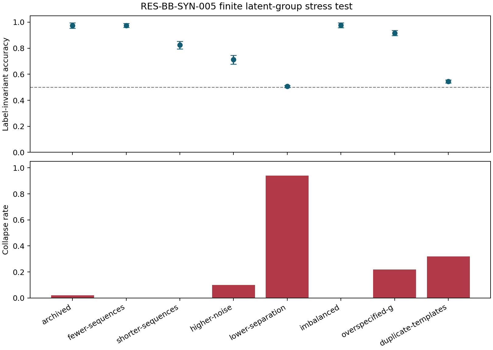
RES-BB-SYN-005 ran 400 seeded datasets across eight predeclared cells. In the
archived-design cell, mean hard accuracy was 0.9742 (95% interval
0.9536–0.9948) and mean adjusted Rand index was 0.9183. Every returned
objective equaled the final trace value, all traces were monotone, and all 1,200
restarts were valid. Low separation and duplicate templates expose the expected
non-identifiability/collapse boundary; this is not evidence for normalized-mixture
identifiability.
Pending-review misspecification and negative-control suite¶
RES-BB-SYN-006 retained 400 seeded datasets across eight predeclared failure
regimes. The null-Gaussian false-positive dataset rate was 0.680;
zero-inflated Poisson and dense Gaussian saturated their MAP segment budgets in
every dataset; short-segment exact recovery was 0.080. Under heterogeneous
subject boundaries, mean shared-model F1@3 was 0.4907 versus 0.6206 for
independent fits scored against the same subject truths. All 50 EP fits reached
the predeclared fit-only timeout, so no EP accuracy metric is imputed.
The full summary and failure map are finalized, but scientific interpretation remains pending independent review. These cell-specific failure indicators are not directly comparable and do not support a universal robustness or model-superiority claim.
{kind=link}
Runtime scaling¶
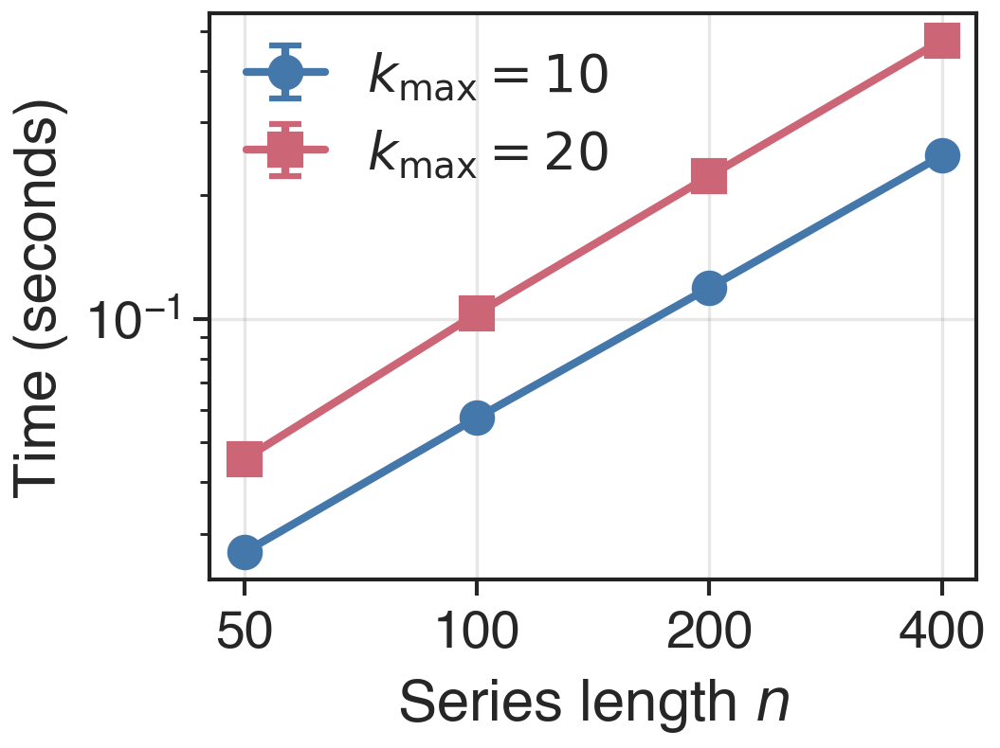
Empirical runtime vs sequence length for two values of \(k_{\max}\). The
growth is smooth and predictable across the archived range
\(n\in\{50, 100, 200, 400\}\), consistent with the
\(\mathcal{O}(k_{\max} n^2)\) DP cost of prop:bb-complexity. For
\(n\gtrsim 10^5\), switch to SlidingWindowSegmenter — see the
large-\(n\) tutorial.
Real-data case studies¶
1. Well-log NMR geology — Gaussian block¶
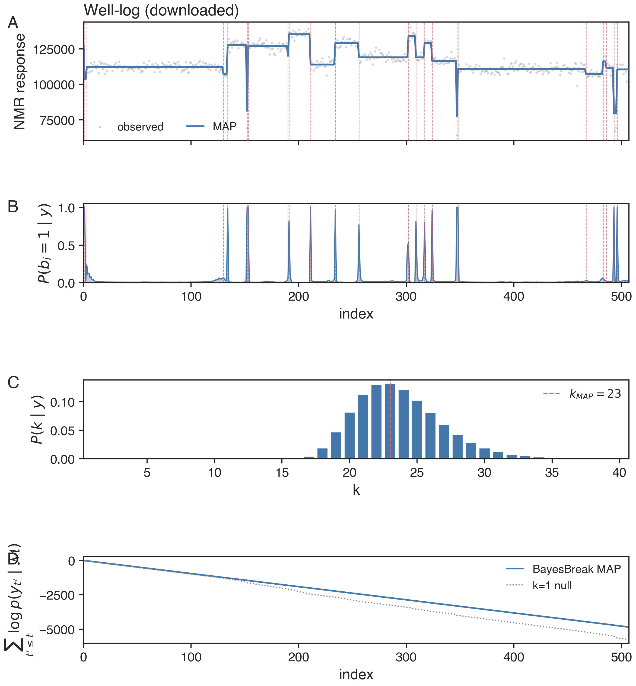
BayesBreak segmentation on the 4050-point NMR well-log series at stride-8 (\(n=507\)). Top: standardized response with joint MAP overlay; bottom: marginal boundary posterior; right: \(P(k\mid y)\) and cumulative log-evidence vs the \(k\!=\!1\) null.
Headline numbers (from the archived fit):
| Configuration | \(\widehat k\) | MAP log-evidence | Runtime |
|---|---|---|---|
| Index-uniform prior, \(g\equiv 1\) | 23 | −4989.28 | — |
| Length-aware prior, \(g(\ell)\propto\ell\) | 25 | −4997.15 | 1.91 s |
The two priors agree on segment count to within ±2, with the length-aware prior placing slightly more boundary mass in the long-segment regime.
2. Coriell array-CGH — shared-boundary multi-subject Gaussian¶
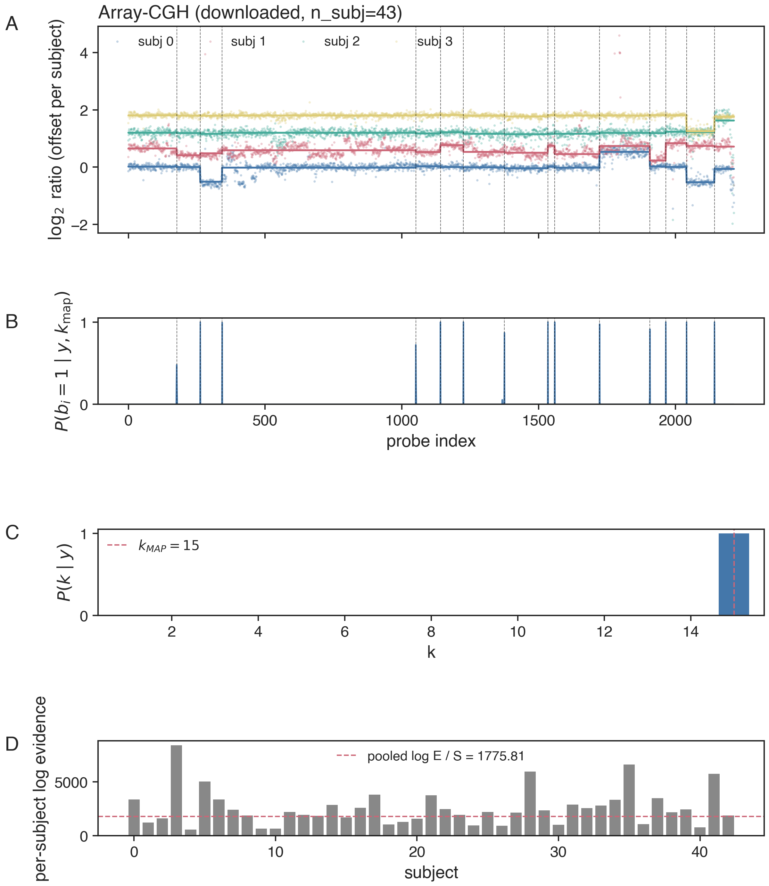
Pooled fit across \(S=43\) Coriell cell-line profiles (\(n_{\mathrm{probes}}=2215\)). Top: four representative profiles offset for visibility; bottom: pooled marginal boundary posterior; right: \(P(k\mid y)\) and per-subject log-evidence relative to the pooled mean.
| Strategy | Pooled log-evidence | \(\widehat k\) |
|---|---|---|
| Independent per-subject (no pooling) | 109 617.7 | — |
| Shared boundaries, subject-specific \(\mu\) | 76 359.8 | 15 |
The independent sum is naturally larger because each subject's segmentation is integrated independently. The shared-boundary pooled fit recovers \(\widehat k=15\) shared changepoints.
Corrected raw-matrix comparator¶
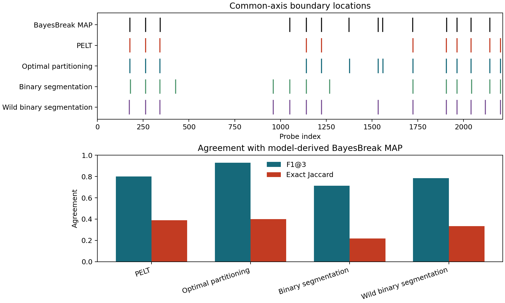
RES-BB-CMP-003 uses the exact hashed raw 2,215-probe × 43-subject matrix and
scores every method on the common probe-index axis. Agreement F1@3 with the
model-derived BayesBreak MAP is 0.8000 for PELT, 0.9286 for optimal
partitioning, 0.7143 for binary segmentation, and 0.7857 for wild binary
segmentation. The latter three use the 14-boundary target. The predeclared PELT
grid did not attain 14 boundaries; its closest 11-boundary candidate is reported
without post-hoc retuning. These are agreement diagnostics, not external truth.
3. S&P 500 volatility regimes — Gaussian on log \(r_t^2\)¶
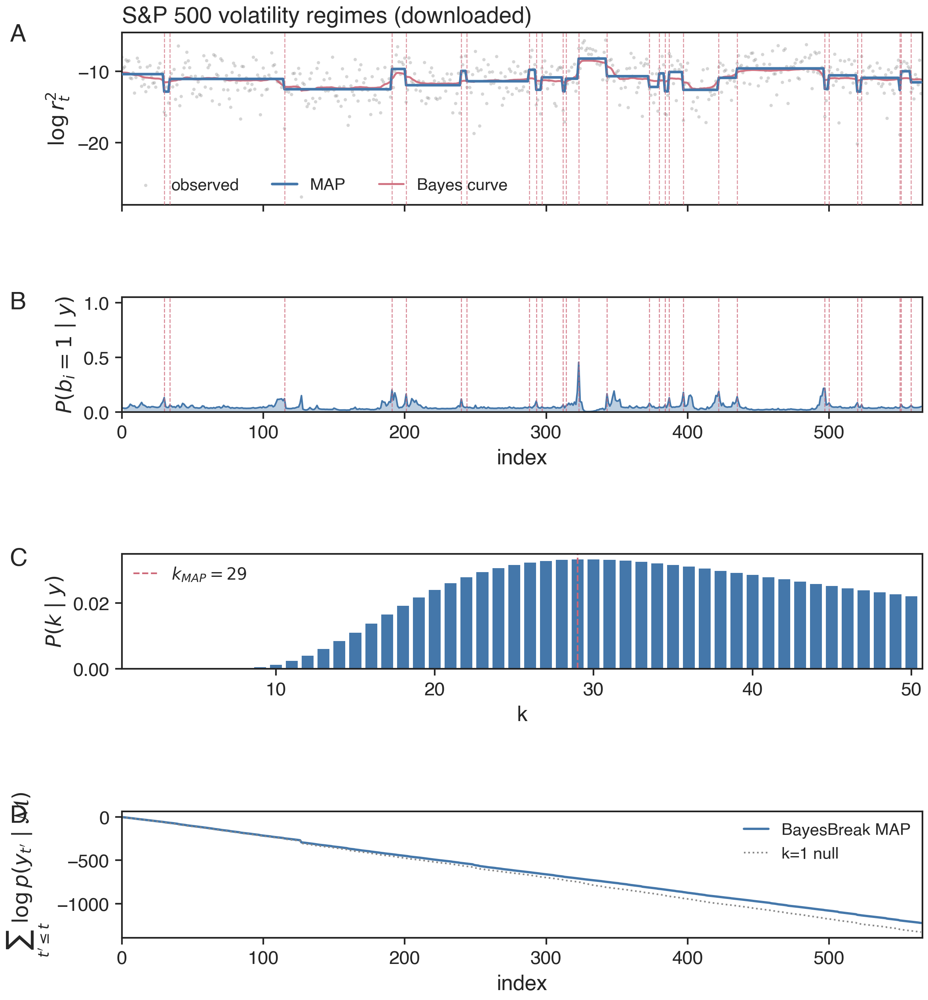
Daily \(\log r_t^2\) from 2015–2023 at stride-4 (\(n=566\)). MAP boundaries cluster around the March-2020 COVID-19 shock and the February-2022 regime shift annotated by the dashed vertical references.
| Block model | \(\widehat k\) | Log evidence |
|---|---|---|
| Gaussian on \(\log r_t^2\) | 29 | −1296.65 |
| Bernoulli on threshold crossings (95th pct) | 50 | −114.41 |
The Bernoulli-on-crossings secondary specification reaches a higher segment count but a less-interpretable interpretation on the original return scale; the Gaussian specification is the primary result.
4. CpG-atlas methylation — Beta-response with per-CpG precision¶
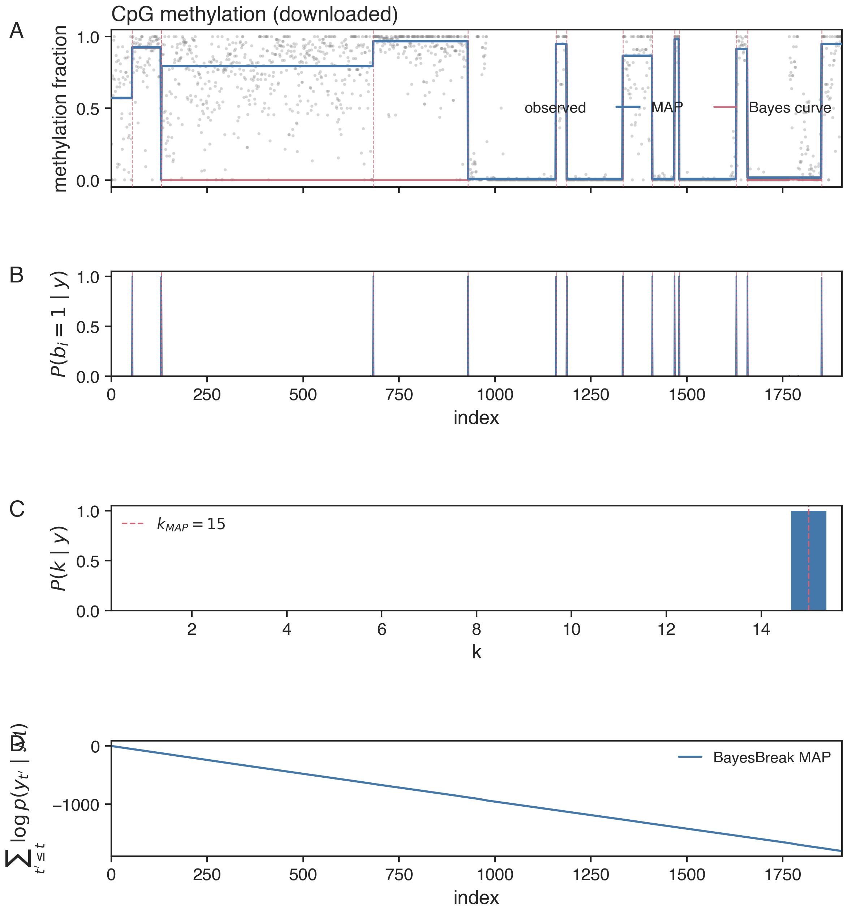
methylKit chr21 test region (\(n=1904\) CpGs). Top: per-CpG \(\beta\)
values coloured by local read coverage \(\phi_t\); bottom: marginal
boundary posterior. The Bayes curve transitions between low and high
methylation plateaus aligned with the annotated reference markers.
| Region / cell type | \(\widehat k\) | Historical predictive record |
|---|---|---|
| chr21 methylKit test region | 15 | -387.50 (RES-BB-RD-007Q, excluded) |
The segmentation is a real result. The archived held-out computation is also real, but it is excluded from posterior-predictive conclusions because it used a Gaussian predictive calculation for Beta observations and an implicit endpoint rule. It is shown only as historical provenance and must not be interpreted as a valid predictive score.
Corrected Beta-observation posterior prediction¶
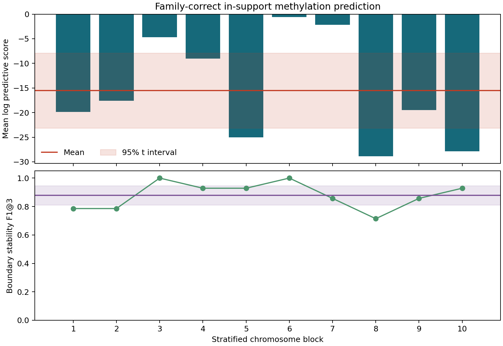
RES-BB-RD-008Q uses observed held-out coverage as positive phi_new, the
Beta-observation predictive distribution, and extrapolation="error". Ten
disjoint in-support chromosome blocks contain 1,520 held-out CpGs. Total log
predictive score is −23605.6749, pooled mean is −15.5300, and the
split-mean 95% t interval is [−23.1445, −7.9156]. Mean boundary-stability
F1@3 is 0.8786. The blocks are regions of one chromosome, not independent
biological samples; no certified PIT calibration or external atlas accuracy is
claimed. This score is not comparable with the excluded parent because both the
family and split changed.
Reproducing these numbers¶
The values above are stored in
docs/manuscript/shared/figures/results/realdata_metrics.json.
This archived file is read-only. New executions are written to results/ with new result
identifiers and provenance. The current generation entry point is
The figures are regenerated by the corresponding scripts under
scripts/figures/.
See Reproducibility for the full pipeline.
External baselines on the cached fits¶
Running the pure-Python baselines via bayesbreak.baselines on the
cached real-data fits at the same k target as each BayesBreak
\(\widehat k\) when the algorithm requires one. F1@3 is an agreement diagnostic
at a 3-index tolerance window measured against BayesBreak's MAP boundaries; it
is not independent ground-truth accuracy. Numbers are archived in
docs/manuscript/shared/figures/results/baselines_metrics.json.
| Dataset | PELT | OP@\(\widehat k\) | BS@\(\widehat k\) | WBS@\(\widehat k\) | Fearnhead-2006 ref |
|---|---|---|---|---|---|
| Well-log NMR (\(n=507\), BB \(\widehat k=23\)) | F1@3 \(=0.18\) | \(\mathbf{0.91}\) | \(0.86\) | \(0.05\) | \(\mathbf{0.93}\) |
| Array-CGH (\(2215\times43\), BB \(\widehat k=15\)) | \(0.80\)* | \(\mathbf{0.93}\) | \(0.71\) | \(0.79\) | n/a |
| S&P 500 (\(n=566\), BB \(\widehat k=29\)) | \(0.53\) | \(\mathbf{0.82}\) | \(0.43\) | \(0.07\) | \(0.55\) |
| Methylation (\(n=1904\), BB \(\widehat k=15\)) | \(0.44\) | \(\mathbf{0.79}\) | \(0.57\) | \(0.14\) | n/a* |
* CGH PELT reports the closest candidate in the predeclared eight-penalty grid (11 rather than 14 boundaries). The Fearnhead-2006 reference DP is omitted at \(n>1200\) for the local memory budget.
R-backed baselines (CBS via DNAcopy, SMUCE via stepR, RJMCMC via
mcp) are skipped here because their upstream R packages are not
installed on the build machine; the wrapper interface is in place — see
Baselines for the install hints.
What's planned¶
The four tab:real_* tables in §6 still have --- cells in the columns
that require external annotations:
- Boundary F1 / MAE for array-CGH — pending Snijders-2001 annotation load.
- ECE for well-log — pending verified reference boundaries.
- Atlas F1 for methylation — pending Loyfer-2023 atlas pipeline (GEO
GSE186458+nloyfer/wgbs_tools/nloyfer/UXM_deconv).
Pure-Python matched-count agreement is now populated for the corrected CGH route. Equal-budget predictive tuning, independently annotated external truth, and optional R-backed comparators remain future protocol strata.